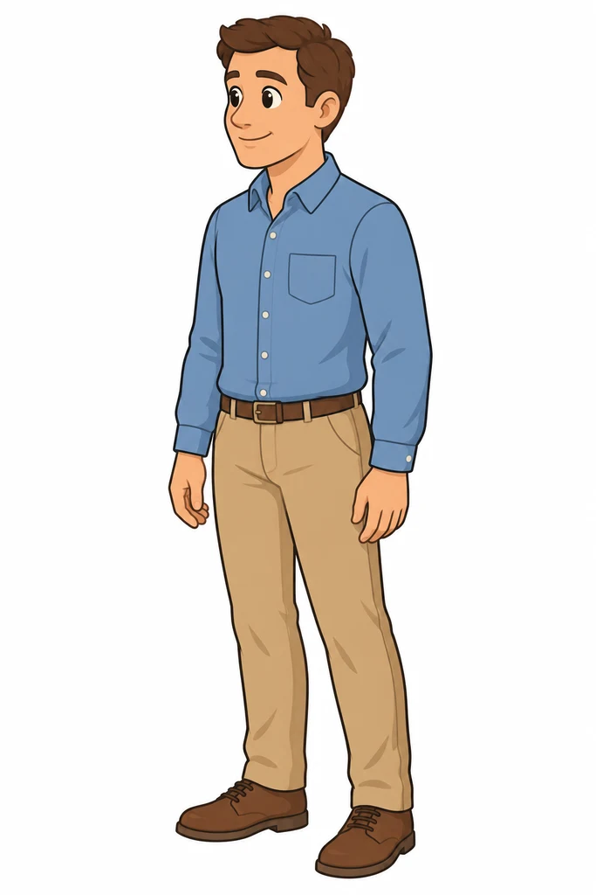
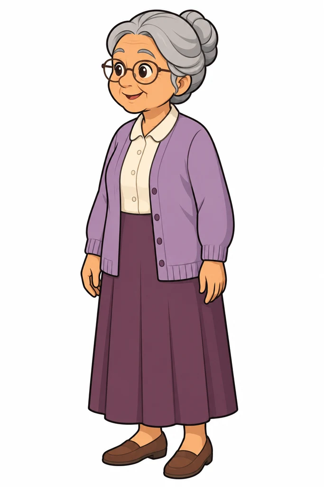
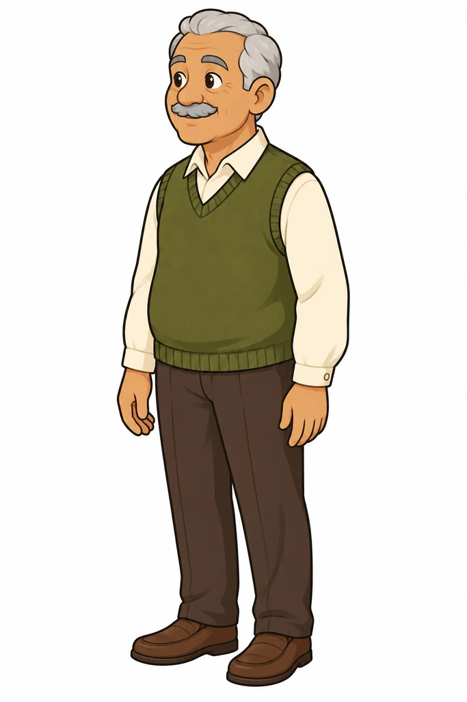
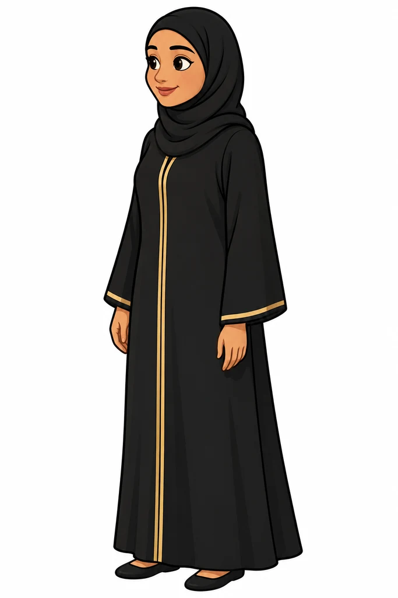
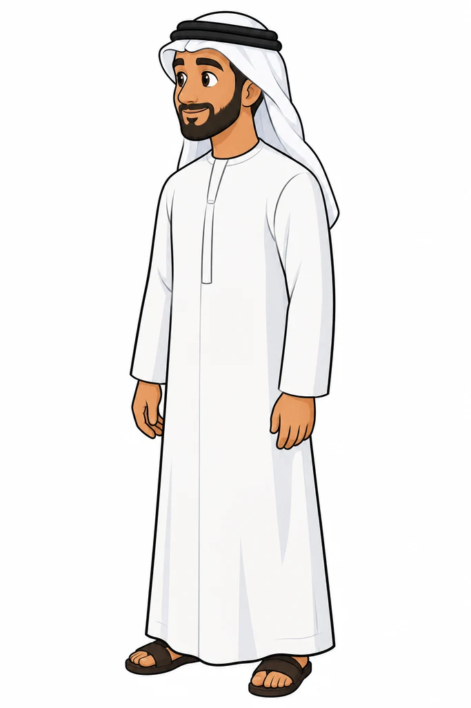
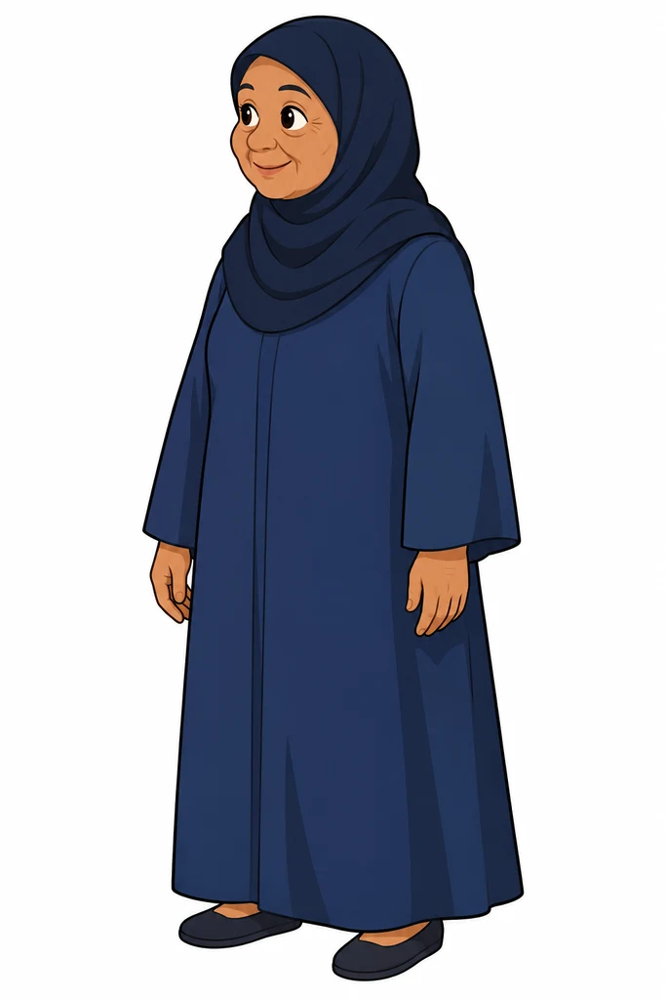
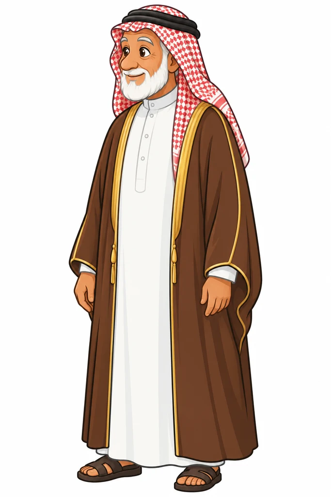

current clip
idle
Standing, breathing, small natural sways; never fully still. Every other animation starts and ends near it.
Children, grown-ups and a fox mascot for children's animated stories
We need seven 2D Spine characters for short animated video stories for children aged 3–7: a boy, a girl, Bibo the fox mascot, and a mother, father, grandmother and grandfather. Each child comes in five looks and five outfits. Each grown-up comes in an everyday and a Gulf Arab version, because we are also expanding to the Gulf states. All are combinable, with lively faces.
You draw all the final art and rig and animate it. Our pictures in this brief are concept references we made: match the characters, designs and colours, but they are not exact outlines. Our current animation clips show the motion and liveness we want; they are not perfect (see Appendix D).
The main brief (sections 1–10) is everything you need to quote. The appendices hold the pictures, the animation cards and the checklist.
This table is the whole job. Every other part of the brief refers back to it.
| Item | How many | Details |
|---|---|---|
| Characters | 7 | boy, girl, Bibo, mother, father, grandmother, grandfather, on three rigs: one kid rig shared by the boy and girl, one adult rig shared by the grown-ups, and one Bibo rig |
| Base bodies | 4 | one kid body shared by the boy and girl, one adult woman and one adult man on the same adult bones, each in 3 views (3/4, front, back); Bibo in 3/4 and front (Appendix A) |
| Looks | 19 | 5 boys, 5 girls, Bibo, and 8 grown-ups (mother, father, grandmother, grandfather, each in an everyday and an Arab version); a look is the head: face outline, nose, ears, skin tone (Appendix A) |
| Heads | 19 | one per look: 10 different kid heads and 8 different grown-up heads, each with its own head shape, nose and ears, in 3 views, plus Bibo in 2 views (56 head drawings); eyes, brows and mouths are shared (see Face sets) |
| Face sets | 3 | one shared by all 10 kids, one shared by all 8 grown-ups, one for Bibo: 12 expressions, 6 mouth shapes, blink |
| Clothing layers | 39 outfits, 115 sets of drawings | kids, 18 outfits in 3 views (54 sets): boy T-shirt set and thobe set, girl dungarees set and long-dress set, each in warm · winter · underwater (12); space suit and protective gear, one of each shared by the boy and girl (2); girl headscarf in 4 versions (4). Bibo, 2 outfits in 2 views (4 sets): everyday clothes, space suit. Grown-ups, 19 outfits in 3 views (57 sets): women and men, each in an everyday and a Gulf set, each in warm · winter · underwater (12); grandmother and grandfather warm outfits (2); space suit, one shared (1); adult headscarf in 4 versions (4) (Appendix B) |
| Hair styles | 13 | today's styles (5 boy, 4 girl) and 4 grown-up styles, swappable, in 3 views (Appendix C) |
| Beards | 4 | stubble, short, full and goatee, for any grown-up man, swappable, in 3 views (Appendix C) |
| Props | 5 | bicycle, scooter, skateboard, ice skates, roller skates (Appendix F) |
| Animations — children | 76 | each made once on the kid rig and used by both the boy and girl, in the views on its card (Appendix D) |
| Mood postures | 12 | happy, sad, angry × idle, talk, walk, run; 3/4 only; in warm, winter, space and protective; made once on the kid rig (Appendix E) |
| Animations — grown-ups | 26 | each made once on the adult rig and used by all 8 grown-ups, in the views on its card (Appendix D) |
| Animations — Bibo | 27 | front; idle, walk, run and wave also in 3/4 (Appendix D) |
For each rig (kids, grown-ups and Bibo) you deliver these files, covering everything in the Scope table.
| Deliverable | What exactly |
|---|---|
| Spine project | kids.spine, adults.spine, bibo.spine: one skeleton per view, all looks, clothing layers, headscarf and hair as skins, all animations |
| Export | for every skeleton: the JSON and binary .skel (agreed Spine version), the atlas file and its PNG pages |
| Source art | the layered PSD per rig and view, and the PNG images exactly as used in Spine |
| Props | the vehicle and skate art and their animation, inside kids.spine |
| Rig handbook | a written guide for someone who knows basic Spine but did not build this rig (see below) |
| Templates | a layered PSD template per rig and view with guide lines for the body, joints, overlaps and face position, for drawing new hair, clothes and looks at the right size and cut |
| Walkthrough videos | short screen recordings (about 10–20 minutes in total) of you adding one hair style, one clothing layer and one animation, start to finish |
| Handover call | one to two hours walking us through the rigs, the handbook and the templates |
| Delivery note | with every delivery: the length of every animation; the stride of every walk, run, swim and hop; each skeleton's size (bones, slots, images, mesh vertices, atlas pages); which hair styles got an extra version under headwear; anything not done or changed |
We want to keep adding looks, hair styles, clothes and animations ourselves after you finish. The handbook covers:
Before the final payment we add one new hair style and one simple animation ourselves using only the handbook; where we get stuck, the handbook is fixed.
Appendix H lists every single item as a checklist. The final art, the Spine projects and all rights in them pass to us on payment.
Each child is built from layers: base body + head (look) + clothes + headscarf (girls) + hair. Any look can wear any clothes, headscarf and hair of its character.
| Outfit | Animations that must work |
|---|---|
| Warm, winter | everyday, mood postures, front and back, holding objects, bedtime (get_on_bed, lie_down, sleep, wake_up and get_off_bed in warm only) |
| Space | everyday, mood postures, front and back, holding objects except the drink animations, moon_hop |
| Protective | everyday, mood postures, front and back, holding objects, the riding animations |
| Underwater | the underwater animations, plus idle, talk and wave |
| Grown-ups, warm and winter | the grown-up animations, except the underwater ones and moon_hop |
| Grown-ups, space | the grown-up animations, except the underwater ones and the elder ones |
| Grown-ups, underwater | float_idle, float_wave, swim, plus idle, talk and wave |
| Bibo, everyday clothes | all his animations except jump, land and hold_kite |
| Bibo, space suit | idle, talk, wave, nod, shake_head, point_left, point_right, jump, land and hold_kite |
Each card in Appendix D lists its outfits. Other pairs (a bike ride in a space suit) are never used and need no cleanup.
Three views. 3/4 is the main one; front and back carry only the animations named below.
| View | What it is | Animations |
|---|---|---|
| 3/4 | turned about 45° to the viewer's left, nose and gaze to the left; never a near-front pose | all kid and grown-up animations except those on front-only and back-only cards; Bibo: idle, walk, run and wave |
| Front | facing the camera, looking at the viewer | idle, talk, wave, walk_forward, run_forward, swim, the face expressions and the blink; grown-ups: the same, without run_forward; Bibo: everything |
| Back | a slight 3/4 back: mostly from behind, turned a little so one ear shows | back_idle, walk_back, run_back (children only), swim; no faces |
wave turns sideways); do not copy that. The same holds for front and back: they stay front and back throughout. We switch between views in our software with a cut, so no turn animations are needed.We flip characters in software, so the 3/4 is drawn facing left only. An animation keeps its name in every view it exists in.
What our player needs. You design the rig; propose its structure in your quote.
| Topic | Requirement |
|---|---|
| Spine | the official Spine web runtime (spine-webgl) and the official Flutter runtime (spine_flutter), both from the same export; version agreed at kickoff, we propose 4.3; meshes, weights, IK and constraints are welcome; do not use tint black or the screen blend mode, because the Flutter runtime does not support them |
| Performance | the characters play live on ordinary phones, often several in one scene, so keep the rigs light (see Keeping the rigs light below) |
| Size | kids: about 1000 px from the soles to the top of the head; grown-ups: about 1500 px, the grandparents a little shorter; Bibo: about 800 px to the top of his head, with the ears above that; each character stands on its origin between the feet |
| Layering | a face expression, the talking mouth and the blink each play on top of any action at the same time; the talking mouth replaces the mouth of the expression while it plays; actions do not key the face, except yawn, idle_sleepy, lie_down, sleep and wake_up, which set the eyes, and we stop the blink during them |
| Eye control | eye_target: one control bone that moves both pupils, so our code can aim the eyes |
| Body tracks | arm, leg and body motion can play on separate tracks, so we can combine them (for example float_pickup arms with kicking legs) |
| Loops and one-shots | loops close exactly; one-shots start and end in idle unless their card says otherwise, and underwater one-shots use float_idle instead of idle; walks, runs, swims and hops are in place: tell us the stride; in 3/4 our software moves the character straight sideways across the screen, so the feet must stay planted for that direction |
| Hold points | hold_l, hold_r in the hands and paws, with a slot for the held object between the palm and the fingers; fx_snorkel at the snorkel tip; these frames marked with Spine events: grab when an object reaches the hand (pickups, float_pickup), release when it leaves the hand (place animations, throw, give_return), contact on kick, land in moon_hop |
| Projects | three Spine projects (kids.spine, adults.spine, bibo.spine), one skeleton per view (kid_34, kid_front, kid_back, adult_34, adult_front, adult_back, bibo_34, bibo_front) |
| Shared kid rig | the boy and girl use the same skeletons, bones, body proportions and head size; each animation is made once and works for both, with cleanup where the clothes or hair need it; if an animation needs a separate version, list it in your quote |
| Shared adult rig | all 8 grown-ups use the same skeletons and bones; the woman and man bodies differ in shape, and the grandparents are rounder through a body scale set per look on the same bones, which also widens their clothes; each animation is made once and works for all, including the long Gulf clothes; if widening does not look right for an outfit, tell us in your quote and price a separate drawing |
| Export | JSON and binary (.skel) per skeleton at scale 1.0; PNG atlas pages of at most 2048 × 2048, premultiplied alpha off (the Flutter runtime does not support it), 2 px padding; layered PSD per rig and view, layer names matching the image names |
A Spine character is drawn live on the phone, every frame. Our stories often show several characters at once, on ordinary phones and tablets, and must stay smooth at 60 fps. A rig that looks perfect on a desktop can stutter there, so:
We test performance ourselves on real phones with several characters in a scene; if a rig is too heavy we ask for optimisation, with the exact numbers.
| What | Name | Examples |
|---|---|---|
| Look | look/<look> | look/boy_kid, look/arab_father, look/bibo |
| Clothes | clothes/<set>/<outfit>; clothes/space, clothes/protective | clothes/thobe/winter, clothes/gulf_men/warm, clothes/grandmother/warm, clothes/bibo/everyday, clothes/bibo/space |
| Headscarf | headscarf/<version> | headscarf/everyday, headscarf/knit, headscarf/swim, headscarf/space, headscarf/adult_everyday |
| Beards | beard/<style> | beard/stubble, beard/short, beard/full, beard/goatee |
| Headwear and gear | gear/<item> | gear/winter_hat, gear/space_helmet, gear/protective_helmet, gear/pads, gear/mask_snorkel, gear/ghutra, gear/shemagh, gear/agal, gear/bisht |
| Hair | hair/<look it comes from> | hair/girl_kid_black |
| Tinted slots | skin_<part>, hair_<part>; eyebrows and beards count as hair; no colour keys on these slots | skin_forearm_l, hair_brow_l |
| Animations | as on the cards | walk, pickup_table, float_idle |
| Mood postures | <action>_<mood> | walk_happy, idle_sad |
| Faces | face_<expression>, mouth_closed mouth_a mouth_o mouth_e mouth_mbp mouth_fv, blink | face_happy |
| Props | prop_<name> | prop_bicycle, prop_scooter |
The characters must feel alive, never like cut-out puppets, and every action must look the way a real child would do it.
We render these tests ourselves from your Spine export and check each part where it is most likely to break.
| Test | What we check |
|---|---|
| 1 · Every animation on 2 looks | boy: boy_kid and arab_boy (thobe); girl: girl_kid and hijabi_girl (long dress, headscarf); grown-ups: mother, father, arab_mother and arab_father; Bibo: all |
| 2 · Every clothing layer | in each of its outfits and views. Children on land: idle, walk, run, jump and pickup_ground in 3/4, idle in front, back_idle in back. Underwater: idle, float_idle and swim. Grown-ups on land: idle, walk and seated in 3/4, idle in front, back_idle in back. Bibo: idle and wave in 3/4 and front |
| 3 · Every hair style, beard and headscarf | idle, walk and run in 3/4; idle, walk_forward and run_forward in front; back_idle, walk_back and run_back in back; without headwear and under the winter hat, space helmet and protective helmet |
| 4 · Every look | idle, talk and the 12 face expressions |
| 5 · Faces and moods | the expressions on top of talk, walk and jump; the 12 mood postures; the mouth shapes with each expression |
| 6 · Spot checks | 20 random combinations we pick |
| 7 · Technical | exact loops, no sliding at the stated stride, one-shots start and end as their cards say, smooth on our test phones with several characters on screen, on web and Flutter |
A test passes when the quality bar holds and none of these appear: a wrong-way bend, a gap or seam, the body showing through, a jump at the loop point, sliding feet, a missing part. We report each failure as the exact combination and frame.
To be agreed with your quote; please propose:
The base bodies, shown in gray: every layer sits on top of them. The boy and girl pictures show the same kid body: draw one shared body from them, with the same height, limbs and head size.
 3/4
3/4 front
front back
back 3/4
3/4 front
front back
back 3/4
3/4 front
front back (reference only)
back (reference only) 3/4
3/4 front
front back (reference only)
back (reference only)Concept pictures in 3/4; you draw the front and back views from them. The gray bodies are the adult base bodies.










Each outfit's clothing layers laid flat, then the outfit dressed on every look in all three views. The dive mask and snorkel, the space suit and the protective gear are identical on every child, so draw them once for the shared kid body.


The suit includes the backpack: it shows in the back views and on the girl's laid-flat picture. It is missing only from the boy's laid-flat picture.


Each set laid flat. The dressed grown-ups are in Appendix A. In the Gulf sets, the women wear an abaya with a shayla or headscarf, and the men a thobe with a ghutra or shemagh, an agal and, in winter, a bisht. The Gulf underwater sets are modest and fully covering.


wave does). The same goes for walk, run and the riding clips. Bibo's run clip is a right-facing profile: make it 3/4 left and front. Where a clip and its card differ, the card wins.A current clip plays our existing animation; a key pose shows the most telling moment of a new one; a base picture shows the character only. Each card shows its views, loop or one-shot, and the outfits it must work in. Most clips run about 4 s, so they do not show real speed: propose a length for each animation in your first delivery, for us to approve.
idleStanding, breathing, small natural sways; never fully still. Every other animation starts and ends near it.
talkTalking with small head and hand gestures; the mouth shapes are separate (Appendix E). In front the child talks to the viewer. Underwater: no mouth (we add the bubbles).
waveWaving hello, smiling. In front the child waves to the viewer.
walkA natural, unhurried kid walk, in place.
runA happy run, knees up, arms pumping, in place.
jumpA jump on the spot: crouch, push off, land softly, settle back to idle.
clapClapping, pleased.
 key pose
key posepoint_up, point_forward, point_downEyes, then head turn to the target; the arm extends and the index finger points up, forward or down (in mittens the whole hand points); holds about 1 s.
seatedSitting on a chair or bench (the seat is the scene), idle loop.
seated_down, seated_upseated_down: from idle, the child sits down on the chair or bench, ending in seated. seated_up: from seated, the child stands back up, ending in idle. Keep both simple and short.
 key pose
key posesit_groundSitting on the ground with the knees up and both feet flat, hands resting on the knees, breathing and looking around a little. The ground is the scene.
 key pose
key posesit_ground_cryThe same sitting pose, crying softly: the hands rub the eyes and the shoulders shake in small sobs. Play face_cry on top. Gentle, never frightening.
 key pose
key posesit_ground_angryThe same sitting pose, grumpy: arms crossed on the knees, shoulders up, small huffs. Play face_angry on top. Grumpy for a child, never frightening.
key posesit_ground_down, sit_ground_upsit_ground_down: from idle, the child sits down on the ground, ending in sit_ground. sit_ground_up: from sit_ground, the child stands back up, ending in idle. Keep both simple and short.
 key pose
key poselook_aroundCurious, with the body staying in 3/4: the eyes lead (pupils slide left, right, up), then the head turns a little within the view (face parts slide across the head, about 15–20°), tilts and pauses; the body leans slightly toward where the child looks. No full turn.
 key pose
key posebowA polite bow from the waist, hands at the sides, then back up, smiling.
 base picture
base picturenod, shake_headnod: a small yes, two dips of the head. shake_head: a small no, the head turns a little left and right within the view. The body stays in 3/4.
 key pose
key posecheerFrom idle, the arms shoot up with a happy bounce, then a soft landing back to idle.
 key pose
key posethinkOne hand to the chin, the head tilted, the weight on one leg. Play face_thinking on top.
 key pose
key posehug_start, hug_idle, hug_endhug_start: from idle, the arms open and wrap around someone or something in front of the child. hug_idle: the hug with the eyes closed, rocking gently. hug_end: lets go, ending in idle. The arms stay in front of what is hugged, so we can place a character or object behind them; tell us the distance.
 key pose
key posefallFrom idle, walk or run, the child trips and falls back onto the bottom, ending in sit_ground. We then play sit_ground_cry, sit_ground_angry or sit_ground_up.
danceA simple happy kid dance.
 key pose
key posekneel, kneel_idlekneel: kneels down and sits back on the heels; kneel_idle: the loop on the knees, looking at something on the floor.
key posekneel_upFrom kneel_idle, the child gets back up, ending in idle. Keep it simple and short.
walk_forwardWalking toward the camera, in place.
run_forwardRunning toward the camera, in place.
back_idleStanding seen from behind (slight 3/4 back), breathing.
walk_backWalking away from the camera, in place.
run_backRunning away from the camera, in place.
carryWalking while carrying an object in both hands.
pickup_idleStanding, holding an object.
 key pose
key poseidle_holdStanding relaxed and breathing, holding a small object such as a flower in one hand, just below the chest. It is the hand nearest the viewer; the other arm hangs relaxed.
pickup_groundBending down to pick an object up from the ground, ending in pickup_idle.
place_groundPutting the held object down on the ground, ending in idle.
 key pose
key posepickup_tablePicking an object up from a table at waist height, ending in pickup_idle.
 key pose
key poseplace_tablePutting the held object on a table at waist height, ending in idle.
place_kneeKneeling to put an object down. Start from pickup_idle and end in idle, and mark the release frame: we also play it in reverse to pick an object up from the ground on the knees.
talk_holdTalking while holding an object.
groove_holdSwaying happily to music while holding an object.
 key pose
key posegive_reach, give_hold, give_returngive_reach: from pickup_idle, both arms reach forward, offering the object at chest height. give_hold: holds it out and waits, with small drifts. give_return: once the object is taken, the arms come back, ending in idle. We also play give_return and give_reach in reverse for taking an object.
 key pose
key posedrink_start, drink_idle, drink_enddrink_start: from idle_hold, the cup comes up to the mouth and the head tips back a little. drink_idle: small sips with the eyes closed. drink_end: the cup comes down with a happy breath, ending in idle_hold.
throwFrom pickup_idle, throwing a ball with both hands, ending in idle. We also play it in reverse as a simple catch, so mark the release frame.
kickKicking a ball; mark the contact frame.
shakerShaking a maraca to the beat.
bikeRiding a bicycle, pedalling, in place.
scooterRiding a kick scooter, pushing off with one foot.
skateboardRiding a skateboard, pushing off.
skateIce skating, gliding strides.
rollerRoller skating, gliding strides.
 key pose
key poseget_on_bedFrom idle, standing with the back to the bed: the hands press on the mattress and the child lifts up to sit on the bed edge, ending in the pose lie_down starts from (the bed is the scene).
 key pose
key poselie_downFrom sitting on the bed edge: swings the legs up, lies back, settles the head and closes the eyes; ends in sleep (the bed is the scene).
 key pose
key posesleepLying asleep on the bed with the eyes closed, the pillow on the right: slow breathing and small drifts. lie_down ends here and wake_up starts here.
 key pose
key poseyawnArms stretch up and out, a huge yawn with eyes squeezed shut, then the shoulders drop and a sleepy smile.
 key pose
key poseidle_sleepyHeavy half-closed lids, slow blinks, the head nods down and lifts, one hand rubs an eye once per loop.
 key pose
key posewake_upFrom sleep: the eyes flutter open, a stretch, sits up, rubs the eyes and smiles, ending on the bed edge.
key poseget_off_bedFrom the bed edge where wake_up ends, the child slides off the bed and stands, ending in idle (the bed is the scene).
 key pose
key posefloat_idleTreading water, weightless: upright, bobbing about 10 px, slow flutter kicks and small arm circles, hair drifting. Everything slower than on land.
 key pose
key poseswimHorizontal, mask looking ahead, flutter kick and a kid breaststroke, hair streaming back; in front and back toward and away from the camera. In place.
 key pose
key posediveFrom the surface: a happy deep breath, the head tucks down, the legs kick up (about 70°), two kicks; blends into swim.
 key pose
key posesurfaceLooks up, pushes with the arms, kicks; the head pops up.
 key pose
key posefloat_waveFloating, waving slowly with one hand while the other paddles.
 key pose
key posefloat_pointFloating and pointing; the reach makes the body drift slightly back.
 key pose
key posefloat_pickupDrifts down, grabs a shell, brings it to the chest, admires it and returns to float_idle.
 key pose
key posemoon_hopA low-gravity bouncy walk: both feet push off, a slow rise of about 70 px, a hang at the top, arms floating out, a soft landing. In place.
idleStanding, breathing, friendly; ears and tail always a little alive.
base picturetalkTalking to the child, with his mouth shapes.
waveWaving hello.
base picturewalkA friendly bouncy walk with the tail swinging, in place.
runRunning, in place.
presentPresenting: an open paw toward the thing being shown.
listenbriefA short listening beat while the child answers: ears perk up, head tilts, one slow nod.
listenListening, longer.
clapClapping.
delightA burst of joy.
hugHugging.
hopA happy hop.
 key pose
key posehopgentleA small, soft hop, half the height of hop.
wiggleA playful wiggle.
seatedloopSitting, idle loop.
seatedloop_down, seatedloop_upseatedloop_down: from idle, Bibo sits down, ending in seatedloop. seatedloop_up: from seatedloop, he stands back up, ending in idle. Keep both simple and short.
 key pose
key posethinkA paw to the chin, eyes up to one side, the tail swishing slowly.
base picturenod, shake_headnod: a small yes, two dips of the head, ears following. shake_head: a small no, the head turns a little left and right, ears following.
pushPushing.
catcurlCurling up like a cat.
 key pose
key posepoint_left, point_rightPointing to the left and to the right.
key posejump, landA jump up and, separately, a soft landing.
key posehold_kiteStanding, holding a kite string (the kite is ours).
base pictureidleStanding, breathing, relaxed and warm; small natural sways.
talkTalking with small head and hand gestures; the mouth shapes are separate.
waveWaving hello, smiling.
walkA calm adult walk, in place. Long Gulf clothes must move with the legs.
nod, shake_headnod: a small yes. shake_head: a small no; the head stays within the view.
base picturepoint_forwardEyes, then head turn to the target; the arm extends; holds about 1 s. In mittens the whole hand points.
clapClapping, proud of the child.
seated, seated_down, seated_upseated: sitting on a chair or bench, idle loop. seated_down: from idle, sits down. seated_up: stands back up, ending in idle.
hug_kid_start, hug_kid_idle, hug_kid_endhug_kid_start: from idle, bends down to a child's height and opens the arms. hug_kid_idle: the hug, rocking gently. hug_kid_end: lets go and stands, ending in idle. Tell us the distance to the child.
base picturegive_reach, give_hold, give_returngive_reach: from idle, offers an object down to a child. give_hold: holds it out and waits. give_return: ends in idle after it is taken.
idle_elder, walk_elderFor the grandparents: slightly stooped, slower, with small careful steps.
walk_forwardWalking toward the camera, in place.
base pictureback_idle, walk_backStanding and walking away from the camera, seen as a slight 3/4 back, in place.
float_idle, float_waveTreading water, weightless, then waving slowly with one hand. Slower than on land.
base pictureswimHorizontal, flutter kick and a simple breaststroke, in place.
moon_hopThe same low-gravity bouncy walk as the children, in place.
walk_happy is bouncy, walk_sad has dropped shoulders and slow steps, run_angry is heavy and stompy.face_happyA warm smile, raised cheeks, bright eyes.
face_sadBrows up in the middle, lids lower, mouth down.
face_angryGrumpy for a child: brows down and in, a pout; never frightening.
face_surprisedJoyful surprise: brows up, eyes wide, an open "oh" smile.
face_shockedA strong surprise: eyes very wide, mouth open.
face_scaredMild, never frightening; we use it only for short beats.
key poseface_thinkingEyes up to one side, one brow raised, lips pursed.
key poseface_cryEyes squeezed, brows up in the middle, a wobbly mouth and simple tears, which are part of this face. Gentle, never frightening.
face_laughA big open laugh with the eyes closed, stronger than face_happy.
key poseface_sleepyHeavy half-closed lids and a soft mouth.
 key pose
key poseface_confusedOne brow up, the other down, a small crooked mouth. Puzzled, not upset.
 key pose
key poseface_shyEyes down and to the side, a small closed smile, soft blush on the cheeks.
| Item | Who draws it |
|---|---|
| bicycle | you |
| scooter | you |
| skateboard | you |
| ice skates | you (worn on the feet) |
| roller skates | you (worn on the feet) |
| held objects: ball, cup, box, shell, maraca, kite, flower | us; use a placeholder at the hold point |
| bed, blanket, chair, bench | us (they are the scene; in sleep and wake_up we draw the blanket over the child) |
| effects: bubbles, water spray, dust puff | us; do not draw or animate them (the key poses show them only as a guide) |
Try any combination: base body + clothing layer = the dressed child.
Tick items as they are delivered (saved in your browser).